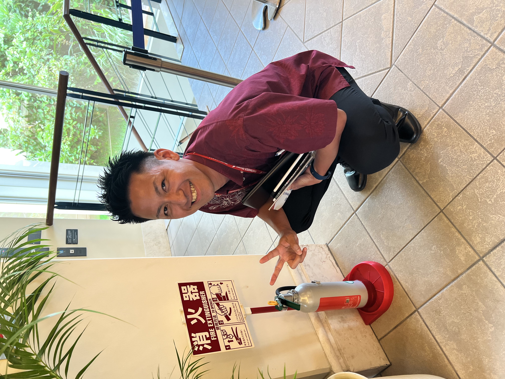

研究分野Research Fields
都市計画学，交通工学 Urban Planning, Transportation Engineering
琉球大学 工学部 助教 Assistant Professor, University of the Ryukyus
人流データを活用した観光客の行動分析，観光消費額の要因分析，都市計画や行動モデルに関する研究に取り組んでいます． I analyze tourist behavior using people flow data, identify factors influencing tourism spending, and study urban planning and behavioral models.

都市計画学，交通工学 Urban Planning, Transportation Engineering
琉球大学 工学部 工学科 社会基盤デザインコース Civil Engineering Course, Faculty of Engineering, University of the Ryukyus